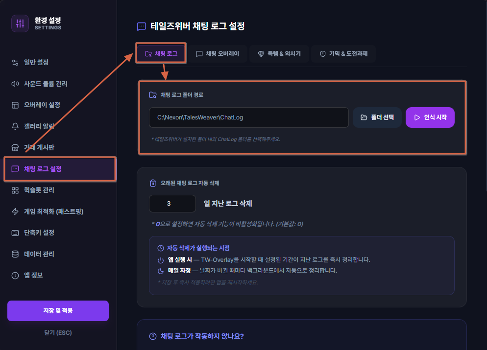
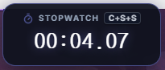
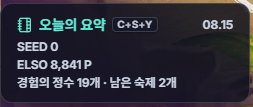
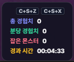
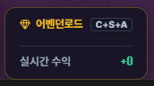
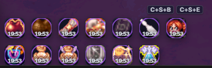

1
기본 환경 설정
2
모험일지 설정
3
주간 데이터 동기화
1단계: 기본 게임 환경 설정
오버레이가 게임 채팅 로그를 실시간으로 감지할 수 있도록 폴더 경로와 플레이 서버를 확인해주세요.
게임 내 [채팅 로그] 옵션 필수 활성화 (ON)
테일즈위버 게임 내 [환경설정(단축키 O) → 게임 탭]에서 '채팅 로그'를 ON으로 설정해 주셔야 twOverlay가 실시간 채팅 감지, 모험일지 및 숙제 동기화를 정상적으로 수행합니다.
기본 경로가 감지되었습니다.
설정한 일수만큼만 보관하고 오래된 원본 채팅 로그 파일(TWChatLog_*.html)을 자동 정리합니다. (0일 = 영구 보관)
일
하이아칸
하이아칸 서버 (기본값)
네냐플
네냐플 서버
twOverlay(테일즈위버 오버레이) 제공 기능
twOverlay는 사냥과 레이드 등 플레이 전반에 걸쳐 필요한 핵심 편의 기능을 게임 화면에 자석처럼 붙여 실시간으로 모니터링할 수 있도록 돕습니다.
📈 실시간 경험치(XP) 미터기: 획득 경험치, 분당 효율(EPM), 킬 수 및 레벨업까지 남은 시간 실시간 계산 및 HUD 노출.
📅 모험일지 자동 기록: 획득 득템 로그를 실시간 파싱하여 달력 스택 뷰 및 시간별 타임라인에 이미지와 함께 박제.
🕒 필드 보스 출현 경고: 보스 타임라인 기반 알람 카드가 게임 화면 우측(Dock 설정 시) 또는 사이드바에 팝업 노출.
🧪 지능형 버프 타이머: 중요 도핑 버프의 남은 시간(1분 전, 10초 전, 5초 전)을 감지해 오버레이 카드로 경고.
💬 자석형 채팅 오버레이: 게임 화면 크기에 연동되어 게임 창을 가리지 않고 투명하게 채팅 창 모니터링 가능.
📋 일일/주간 숙제 체크리스트: 잊기 쉬운 콘텐츠 클리어 횟수 현황을 빠르게 체크할 수 있는 위젯 제공.
테일즈위버 로그(ChatLog) 폴더 지정
앱의 모든 자동화 기능이 게임 내 액션과 정상 반응하려면 반드시 본인의 테일즈위버 설치 경로 폴더를 앱에 올바르게 연동해주어야 합니다.
연동 폴더 정밀 가이드
- ChatLog 폴더 지정: 실시간 경험치(XP) 미터기, 보스 스폰 알람, 모험일지 자동 득템 기록을 위해 필수 설정해야 하는 경로입니다.

게임 오버레이 (HUD) 컴포넌트 안내 & 위치 설정
게임 화면 위에 투명하게 표시되는 실시간 HUD 및 기믹 알림 컴포넌트입니다. 환경설정의 [게임 오버레이] 메뉴에서 마우스 드래그로 원하는 위치에 자유롭게 배치할 수 있습니다.
1. 스톱워치 (타이머 HUD)
보스 레이드 및 인던 클리어 타임을 실시간으로 측정하는 초정밀 타이머 HUD입니다.
• 보이기 / 숨기기 단축키: CtrlShiftS
• 보이기 / 숨기기 단축키: CtrlShiftS

2. 오늘의 요약 HUD
오늘 획득한 SEED, ELSO 포인트, 득템 아이템 목록, 숙제 진행 현황을 게임 화면 한구석에서 실시간 요약 모니터링합니다.
• 보이기 / 숨기기 단축키: CtrlShiftY
• 보이기 / 숨기기 단축키: CtrlShiftY

3. 실시간 경험치(XP) 미터기
사냥 중 획득 총 경험치, 분당 경험치(EPM), 잡은 몬스터 수, 사냥 세션 경과 시간을 실시간으로 계산해 보여줍니다.
• 보이기 / 숨기기 단축키: CtrlShiftZ / 세션 초기화: CtrlShiftX
• 보이기 / 숨기기 단축키: CtrlShiftZ / 세션 초기화: CtrlShiftX

4. 어벤던로드 위젯
어벤던로드 지역별 입장 횟수와 마정석 실시간 수익을 집계하며, 10회 클리어 달성 시 화면 플래시 및 대형 축하 카드가 노출됩니다.
• 보이기 / 숨기기 단축키: CtrlShiftA
• 보이기 / 숨기기 단축키: CtrlShiftA

5. 지능형 버프 타이머 HUD
도핑 버프의 남은 시간을 원형 프로그레스 뱃지로 보여주고, 만료 1분 전/10초 전/5초 전에 중앙 경고 카드로 시각 및 오디오 알림을 울립니다.
• 보이기 / 숨기기 단축키: CtrlShiftB / 기록 강제 삭제: CtrlShiftE
• 보이기 / 숨기기 단축키: CtrlShiftB / 기록 강제 삭제: CtrlShiftE

전체화면 실행 시 사이드바/독바 가려짐 대처법
왜 게임 화면에 오버레이가 안 보이나요?
테일즈위버가 **독점적 전체화면(Exclusive Fullscreen)** 모드로 실행 중일 때는 윈도우 OS의 특성상 어떠한 오버레이 창도 게임 뒤로 가려집니다.
추천 해결 방법 2가지
1. **[강력 추천]** 테일즈위버 인게임 옵션에서 화면 설정을 **'전체 창 모드'(Borderless Windowed)** 또는 **'창 모드'**로 변경해 주세요.
2. 윈도우 트레이 아이콘(시계 옆)을 우클릭하여 **[환경설정]**을 열거나, 설정에서 위치를 **독(Dock) 배치**로 변경하여 단축키(Ctrl+Shift+D)로 켜서 사용하세요.
2. 윈도우 트레이 아이콘(시계 옆)을 우클릭하여 **[환경설정]**을 열거나, 설정에서 위치를 **독(Dock) 배치**로 변경하여 단축키(Ctrl+Shift+D)로 켜서 사용하세요.
알림 효과음 및 오디오 변경 방법
필드보스 출현, 지정 단어 감지 등 각 상황에 울리는 알람음은 아래의 방법으로 빠르고 손쉽게 변경할 수 있습니다.
설정 팁 안내
- **상황별 알림음 변경**: 필드보스 알림 설정, 지정 단어 알림 설정 등 **개별 설정 창의 하단 드롭다운**을 눌러 마음에 드는 오디오 파일(예: `orb.mp3` 등)로 직접 지정하고 바로 재생 테스트를 해볼 수 있습니다.
- **마스터 볼륨 및 일괄 이동**: 환경 설정의 **`소리 및 알림음 설정`** 탭에 들어오시면, 숙제 완료음 등의 볼륨 크기를 미세 조절하고 각 알림음 설정 창으로 한번에 넘어갈 수 있는 **바로가기 카드**들을 제공합니다.
- **마스터 볼륨 및 일괄 이동**: 환경 설정의 **`소리 및 알림음 설정`** 탭에 들어오시면, 숙제 완료음 등의 볼륨 크기를 미세 조절하고 각 알림음 설정 창으로 한번에 넘어갈 수 있는 **바로가기 카드**들을 제공합니다.
프로그램 지원 단축키 요약
플레이 중 아래의 단축키를 사용하여 각 윈도우 및 기능을 매우 빠르게 끄고 켤 수 있습니다.
| 기능 안내 | 단축키 입력 |
|---|---|
| 사이드바(주제어 창) 보이기 / 숨기기 | CtrlShiftD |
| 오버레이 화면 마우스 클릭 투과 토글 | CtrlShiftT |
| 일일 보스 / 숙제 체크리스트 토글 | CtrlShiftC |
| 스톱워치 타이머 HUD 보이기 / 숨기기 | CtrlShiftS |
| 오늘의 요약 HUD 보이기 / 숨기기 | CtrlShiftY |
| 버프 타이머 HUD 보이기 / 숨기기 | CtrlShiftB |
| 어벤던로드 HUD 보이기 / 숨기기 | CtrlShiftA |
| 실시간 경험치(XP) HUD 보이기 / 숨기기 | CtrlShiftZ |
| 실시간 경험치(XP) 세션 측정치 초기화 | CtrlShiftX |
| 실시간 채팅 오버레이 토글 | CtrlShiftH |
| 기록된 버프 타이머 리스트 강제 전체 삭제 | CtrlShiftE |